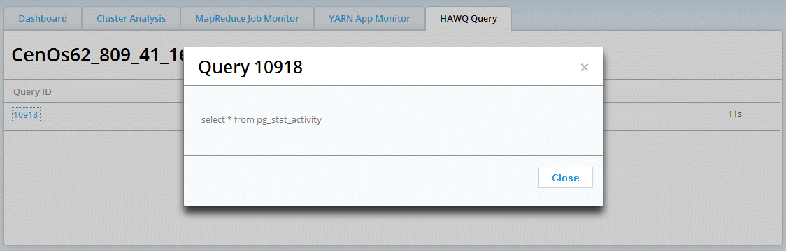

The HAWQ Query monitor is only displayed when HAWQ is installed on the cluster.
This screen displays all active queries running on the HAWQ cluster:

In this release, this screen only displays active queries as can be seen when you run:
SELECT * FROM pg_stat_activity;
on the HAWQ cluster.
Click on a Query ID to get the syntax of that query:
